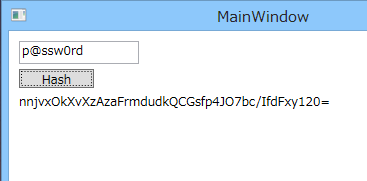
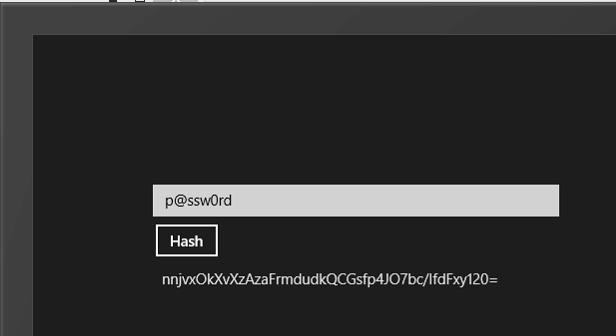

2013/8/29 ストレッチングのロジックに不具合があり、ストレッチできていなかった点を修正しました。
このサンプルプログラムでは、パスワードをハッシュ化して保存する一般的な方法であるソルトとストレッチングを使ったコード例を示します。ソルトとストレッチングを使ったパスワードのハッシュについては、以下のサイトを参考にしました。
このサンプルプログラムでは、.NET Framework 4.5とWindows ストア アプリのWindows Runtimeを対象にしています。両方のプラットフォームで共通の処理は、両方のプラットフォームをターゲットとしたPortable Class Libraryとして実装をして、プラットフォーム固有の機能のみを、各プラットフォーム用のクラスライブラリとして実装しています。
このサンプルプログラムではハッシュのアルゴリズムとしてSHA256を使用しています。このSHA256を求める処理は.NET Framework 4.5とWindows RuntimeではAPIが異なっています。そのためポータブルクラスライブラリでは、ハッシュを生成する部分のみを抽象メソッドとして定義した以下のようなクラスを作成しています。
using System; using System.Collections.Generic; using System.Linq; using System.Text; using System.Threading.Tasks; namespace HashSample.Portable { public abstract class PasswordHashBase : IPasswordHash { public string GetHashData(string salt, int stretchCount, string password) { var hashedSalt = this.ComputeHash(salt); var result = password; foreach (var _ in Enumerable.Repeat(0, stretchCount)) { result = this.ComputeHash(hashedSalt + result); } return result; } protected abstract string ComputeHash(string input); } }
using System; using System.Collections.Generic; using System.Linq; using System.Text; using System.Threading.Tasks; namespace HashSample.Portable { public abstract class PasswordHashBase : IPasswordHash { public string GetHashData(string salt, int stretchCount, string password) { var hashedSalt = this.ComputeHash(salt); var result = password; foreach (var _ in Enumerable.Repeat(0, stretchCount)) { result = this.ComputeHash(hashedSalt + result); } return result; } protected abstract string ComputeHash(string input); } }
.NET Framework 4.5ではこのクラスを継承してSHA256クラスを使ってハッシュを求めています。
using HashSample.Portable; using System.Security.Cryptography; using System.Text; namespace HashSample { public class PasswordHash : PasswordHashBase { protected override string ComputeHash(string input) { return System.Convert.ToBase64String( SHA256Managed.Create().ComputeHash(Encoding.UTF8.GetBytes(input))); } } }
using HashSample.Portable; using System.Security.Cryptography; using System.Text; namespace HashSample { public class PasswordHash : PasswordHashBase { protected override string ComputeHash(string input) { return System.Convert.ToBase64String( SHA256Managed.Create().ComputeHash(Encoding.UTF8.GetBytes(input))); } } }
Windows Runtimeでは、HashAlgorithmProviderからSha256のハッシュアルゴリズムを取得してハッシュを求めています。
using HashSample.Portable;
using Windows.Security.Cryptography;
using Windows.Security.Cryptography.Core;
namespace HashSample
{
public class PasswordHash : PasswordHashBase
{
protected override string ComputeHash(string input)
{
var provider = HashAlgorithmProvider.OpenAlgorithm(HashAlgorithmNames.Sha256);
var buffer = CryptographicBuffer.ConvertStringToBinary(input, BinaryStringEncoding.Utf8);
var hashedBuffer = provider.HashData(buffer);
return CryptographicBuffer.EncodeToBase64String(hashedBuffer);
}
}
}
using HashSample.Portable; using Windows.Security.Cryptography; using Windows.Security.Cryptography.Core; namespace HashSample { public class PasswordHash : PasswordHashBase { protected override string ComputeHash(string input) { var provider = HashAlgorithmProvider.OpenAlgorithm(HashAlgorithmNames.Sha256); var buffer = CryptographicBuffer.ConvertStringToBinary(input, BinaryStringEncoding.Utf8); var hashedBuffer = provider.HashData(buffer); return CryptographicBuffer.EncodeToBase64String(hashedBuffer); } } }
このサンプルの本題ではありませんが、以下のような処理をPortable Class Libraryに記載して、参照されているアセンブリからプラットフォーム固有の処理が書いてある型を探してインスタンス化しています。
using System; using System.Reflection; namespace HashSample.Portable { public static class PasswordHashProvider { static PasswordHashProvider() { var type = typeof(PasswordHashProvider).GetTypeInfo(); var fullName = "HashSample.PasswordHash, " + new AssemblyName(type.Assembly.FullName) { Name = "HashSample.Platform" }; var passwordHashType = Type.GetType(fullName); if (passwordHashType == null) { throw new NotSupportedException("HashSample.Platform.dllが見つかりません"); } PasswordHash = (IPasswordHash)Activator.CreateInstance(passwordHashType); } public static IPasswordHash PasswordHash { get; private set; } } }
using System; using System.Reflection; namespace HashSample.Portable { public static class PasswordHashProvider { static PasswordHashProvider() { var type = typeof(PasswordHashProvider).GetTypeInfo(); var fullName = "HashSample.PasswordHash, " + new AssemblyName(type.Assembly.FullName) { Name = "HashSample.Platform" }; var passwordHashType = Type.GetType(fullName); if (passwordHashType == null) { throw new NotSupportedException("HashSample.Platform.dllが見つかりません"); } PasswordHash = (IPasswordHash)Activator.CreateInstance(passwordHashType); } public static IPasswordHash PasswordHash { get; private set; } } }
こうすることで、.NET Framework 4.5用のライブラリとポータブルクラスライブラリを参照することで.NET用の具象クラスがインスタンス化され、Windows Runtime用のライブラリとポータブルクラスライブラリを参照することでWinRT用の具象クラスをインスタンス化しています。
このサンプルプログラムを実行すると、WPFとストアアプリの両方が起動します。TextBoxにパスワードの元の文字を入力してボタンを押すと、TextBlockにハッシュが表示されます。

